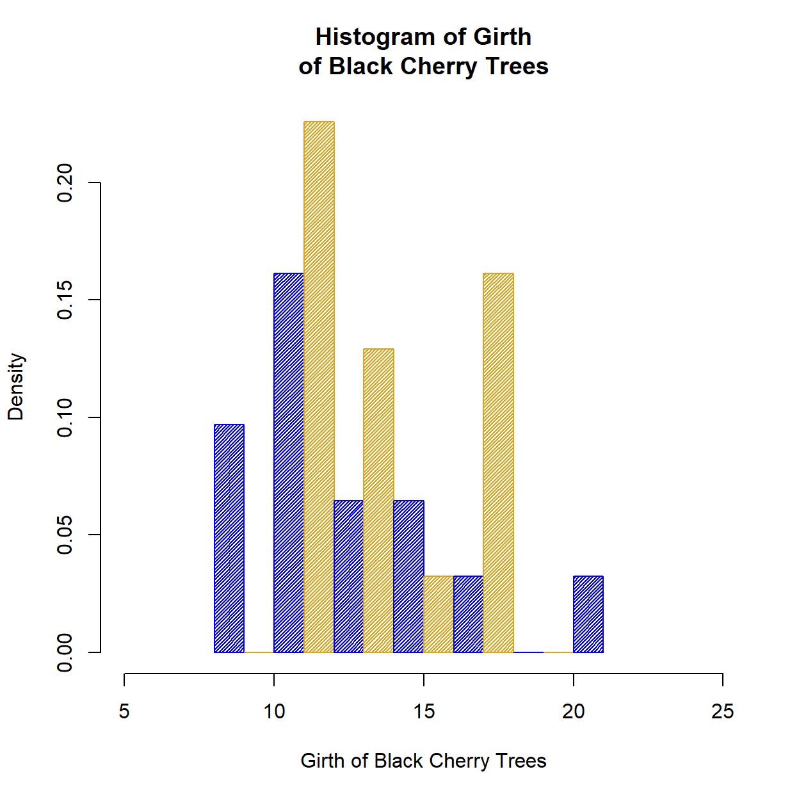

After studying this chapter, you should be able to:
Understand the difference between high level and low level plot functions.
Construct plots using base graphics with hist(), boxplot(), barplot, and plot().
Understand how to use formula notation as a function input.
Add points, lines, and text to an existing plot with points(), lines(), text(), and abline().
Add a legend to an existing plot using legend().
Save plots to a PDF file using pdf().
Create multiple plots in a single graphics device using par(mfrow).
One of the most important components of a statistical analysis is visualizing data with statistical plots. R has several different graphics systems that can be used to produce plots. We will focus on producing some of the most common statistical plots using the built-in graphics system, commonly known as base graphics. Many of the different plotting functions within base graphics share similar syntax and many optional arguments, which allows for wide and efficient customization.
The base graphics system is analogous to drawing with ink on paper: A picture is built up by drawing on the paper. But once something is drawn in ink, it is permanently on the paper. Drawings can be covered by drawing something else over them, or we can start a new drawing with a clean sheet of paper.
Creating plots using base graphics involves typing a series of graphics functions. Graphics functions that can produce a complete plot are called high level functions. Functions that add components to an existing plot are called low level functions.
A histogram is a plot which groups values from a single numeric variable into intervals, called bins, and displays the frequency (or relative frequency) of values within each bin.
The hist() function creates histograms. The first argument (generically called x) specifies a numeric vector that represents the numeric variable we want to visualize. There are a myriad of optional arguments that can be used to control the details of the plot. We will first consider the hist() funtion with its default settings.
hist(trees$Girth)Since hist() is a high level plot function, the entire plot is created just by specifying the data input. There are a few components of the plot to note.
x into approximately \(\log_2(n) + 1\) intervals of equal length, where \(n\) is the number of values in x. This is known as Sturges’ rule. This is used as a guideline, but R also attempts to put breaks at round numbers. For example, in this case, the bin width is exactly 2, which produces more bins than Sturges’ rule would produce.
breaks: The number of breaks can be (approximately) specified using the optionalbreaksargument. There are several ways to usebreaks, such as specifying the number of bins as a single value or specifying a different rule for computing the bins (either"Freedman-Diaconis"or"Scott"). By default,breaksis set tobreaks = "Sturges".
freq: The hist() function by default outputs a frequency histogram, where the height of each bar indicates the frequency (i.e., number) of values within the corresponding bin. By setting the freq argument to FALSE, hist() will output a relative frequency histogram, where the area of each bar indicates the relative frequency (i.e., proportion) of values within the corresponding bin.Side Note: Setting the argument
freq = FALSEis equivalent to setting the argumentprob = TRUE(orprobability = TRUE). Only one offreqorprobneeds to be specified.
density and angle arguments control the shading of the bars. The right argument controls whether values on the boundary between bins are contained in the left or right bin. The details of these and other arguments can be found in the documentation for the hist() function.Other components are not specific to histograms (or the hist() function) but are components that are common to most statistical plots. The arguments to change these components are the same for nearly every high level plotting function in base graphics. The most commonly used arguments are given below.
xlim: The limits (or range) of the \(x\)-axis shown on the plot are set by default to span the range of the bins that contain all the values in x. The xlim argument inputs a vector of length 2 that specifies the lower and upper limits of the \(x\)-axis.
ylim The limits (or range) of the \(y\)-axis shown on the plot are set by default to range from 0 to the height of the highest bar(s) in the histogram. The ylim argument inputs a vector of length 2 that specifies the lower and upper limits of the \(y\)-axis.
xlab: The label on the \(x\)-axis (the \(x\)-labels) is set by default to the name of the input vector. The xlab argument inputs a character value that changes the label on the \(x\)-axis.
ylab: The label on the \(y\)-axis (the \(y\)-labels) is set by default to “Frequency” for frequency histograms and “Density” for relative frequency histograms. The ylab argument inputs a character value that changes the label on the \(y\)-axis.
main: The title of the histogram is set by default to “Histogram of (name of vector)”. The main argument inputs a character value that changes the (main) title of the plot.
col: The color of the bars in the histogram can be set using the col argument. The col argument inputs a character value with the name or palette code (in hexadecimal) corresponding to the color. Character vectors can be used for multiple colors, and the values in the vector will be recycled.
The
colargument also accepts numeric values corresponding to the index of the color in the commandpalette(). For example,col=4corresponds topalette()[4], which is"blue"by default.
The best way to understand the common arguments in plotting functions is to change the default values and see how the plot responds. Documentation for the common arguments is found on the ?par help page.
As an example, we can modify several arguments of hist(trees$Girth). Play around with the below code to see how each argument affects the others.
hist(
trees$Girth,
breaks = 10,
freq = FALSE,
xlim = c(5, 25),
density = 50,
col = c("blue", "goldenrod"),
xlab = "Girth of Black Cherry Trees",
main = "Histogram of Girth\nof Black Cherry Trees"
)Side Note: Note that we can split a label or title into two lines by including the newline character "\n".
A boxplot (or box-and-whiskers plot) is a plot which represents the distribution of a numeric variable by a box.
The lower edge of the box is at the first quartile (Q1) and the upper edge of the box is at the third quartile (Q3). The length of the box corresponds to the interquartile range (IQR).
A horizontal line inside the box marks the location of the median.
Vertical lines, called whiskers, extend from the opposite ends of the box to data values that are at most \(1.5 \times \hbox{IQR}\) away from the edges of the box.
Any values that extend beyond the whiskers are denoted by individual points (these are potential outliers).
Boxplots efficiently visualize the five-number summary for the distribution of data values.
The boxplot() function creates boxplots. The boxplot() function is flexible (polymorphic) in that it will modify its output plot based on the input.
If the first argument (x) is a numeric vector, the boxplot() function will return a boxplot for the values in the vector.
We will load the births.csv file, which contains data on a sample of babies born in North Carolina.
## Make sure births.csv is in the working directory for this command to work
births <- read.csv("births.csv")boxplot(births$weight)By default, the boxplot is drawn vertically (the number line is drawn on the \(y\)-axis). To draw the boxplot horizontally, set the argument horizontal = TRUE.
Question: Notice that the boxplot() function does not print \(x\)-labels, \(y\)-labels, or a main title. How can we create a boxplot that has these labels? Try doing so in the above code chunk.
If the first argument (x) is a numeric matrix or data frame, the boxplot() function will return side-by-side boxplots for the values in each column of the input object.
boxplot(trees)
Caution: Creating plots of different variables on a single plot is a quick way to visualize the center and spread for each distribution. However, since side-by-side boxplots are drawn on the same scale, use caution when comparing distributions. If the variables are measured using different units, then their distributions will not be directly comparable unless the values are converted to the same units (like \(z\)-scores).
While most functions in R expect objects as inputs, some functions expect a formula that often relates more than one object together. In these cases, the formula is written in model or formula notation, where the two sides of the formula are separated by a tilde ~. The syntax for a formula is y ~ x, where x and y are two object or variable names.
For boxplots, y will represent a numeric variable and x will represent a categorical variable. In practice, y is a numeric vector and x is typically a factor. With a formula input, the boxplot() function is able to create side-by-side boxplots to compare subsets of y split by the categories (levels) of x.
As an example, we will use the births data frame to compare the distributions of weights between premature babies and full term babies in the data. A premature baby is one born more than three weeks before the baby is due (i.e., born before 37 weeks). The Premie variable in births is a binary factor. The level Yes means the baby was premature, and the level No means the baby was carried to term. Using formula notation, the boxplot() function will split the weight variable by the two levels of the Premie factor.
boxplot(births$weight ~ births$Premie)From the side-by-side boxplots, the typical weight for premature babies is lower than the typical weight for full term babies. The variability of weight for premature babies is also higher than the variability of weight for full term babies.
Note: If both variables in the formula are inside a single data frame, the formula notation lets us omit the $ notation by including the data argument that specifies the data frame that contains the variables (similar to how the with() function works).
boxplot(weight ~ Premie, data = births) # Produces the same boxplotCaution: The data argument only works in conjunction with a formula input. It cannot be used to omit the $ notation when plotting a single variable.
boxplot(weight, data = births) # Will throw an error
# How do you fix this?
boxplot()Question: How can we compute the summary statistics for the distributions of weight split according to the Premie variable? Type the code in the chunk below.
with(births, )with(births, tapply())with(births, tapply(weight, Premie, summary))with(births, tapply(weight, Premie, summary))The most common statistical plot for visualizing categorical data is the bar plot (or bar chart or bar graph), which shows a bar for each observed category. The height of the bar is proportional to the frequency of that category.
The barplot() function creates bar plots. The first argument, called height, specifies the heights of the bars in the bar plot, which correspond to the frequencies (or relative frequencies) for the categorical variable(s) we want to visualize. The height argument can be a numeric vector or matrix. The type of bar plot that barplot() outputs depends on the class of the height object.
Caution: Even though bar plots are used to visualize categorical data, we cannot input character or factor data into the height argument (R will throw an error). To make a bar plot with barplot(), we first need to summarize the character or factor data into a numeric vector that represents a frequency (or relative frequency) table.
If the height argument is a numeric vector, the barplot() function will return a (simple) bar plot.
premie_freqs <- table(births$Premie) # Summarize factor
premie_freqs
barplot(premie_freqs)If the height argument is a numeric matrix, the barplot() function will return a stacked (or segmented) bar plot. The matrix input typically represents a two-way (contingency) table for two categorical variables. Each bar of the plot corresponds to a column of height, and the values in the column correspond to the heights of the stacked sub-bars.
library(ggplot2) # Load ggplot2 package
data(diamonds) # Load diamonds data
diamonds_table <- with(diamonds, table(cut, color)) # Create two-way table of cut and color
diamonds_table
barplot(diamonds_table)To create a side-by-side bar plot instead of a stacked bar plot, set the optional argument beside = TRUE.
barplot(diamonds_table, beside = TRUE)The differently shaded sub-bars correspond to the levels of the cut factor. To make the plot more readable/informative, we can add a legend by setting the argument legend = TRUE.
The same arguments that control the shading and color of histogram bars in hist() also work for barplot().
barplot(diamonds_table, legend = TRUE, density = 40, col = 1:5)plot() FunctionOne of the most commonly used plots in statistics is the scatterplot, which visualizes relationships between numeric variables. Each point drawn on a scatterplot represents an ordered pair of values \((x,y)\), and the location of the point depends on the values of the two variables of interest: The value of one variable determines the location along the \(x\)-axis, and the value of the other variable determines the location along the \(y\)-axis.
The plot() function is one of the most versatile functions in R. Its basic form produces scatterplots for one or more numeric variables.
The basic syntax for plot() is plot(x, y, ...), where x and y are numeric vectors of the same length.
plot(trees$Height, trees$Girth)The numeric vectors can alternatively be specified using formula notation y ~ x, where y is treated as the response variable and x is treated as the explanatory variable.
## These produce the same plot
plot(trees$Girth ~ trees$Height)
plot(Girth ~ Height, data = trees) # The data argument can only be used with a formula!Caution: Notice that the placement of x and y in the formula notation is reversed from using x and y as separate arguments: plot(x,y) is the same as plot(y ~ x), and it is not the same as plot(x ~ y).
Side Note: If the input of plot() is a single numeric vector, plot() will create a scatterplot of the values in the vector against its index.
plot((1:10)^2)Like all high level functions in base graphics, the plot() function has many optional arguments. Commonly used arguments for plot() are given below.
type: The type argument controls the type of the plot. The default is type = "p" ("p" stands for “points”), which draws a scatterplot. Using type = "l" draws a line plot, in which line segments join the points in sequential (index) order. Using type = "n" draws nothing ("n" stands for “no plotting”), which simply creates the frame of the plot with no points or lines inside. Many other types are allowed; the documentation for plot() lists all of them.
pch: The pch argument controls the symbol used when plotting points. The default is pch = 1, which draws open circles. There are about 25 different symbols to choose from. The pch argument also accepts character values, so any character can be used as the point symbol.
cex: The cex argument controls the size of text or points on the plot. The value corresponds to the amount by which text and symbols should be scaled relative to the default of cex=1. For example, cex=1.5 means to make the points 150% of the default size, and cex=0.75 means to make the points 75% of the default size.
plot((1:10)^2, type = "b", pch = 2, cex = 1.3, col = "blue")For datasets with several variables, we may be interested in understanding relationships between each pair of variables. The pairs() function inputs a matrix or data frame and outputs a scatterplot matrix, which is a grid (matrix) of scatterplots to visualize every pairwise relationship between variables in the data frame. The \(ij\)-th scatterplot plots the \(i\)th column against the \(j\)th column.
pairs(trees)If we apply the plot() function to a data frame, the plot() function gives the same output as pairs().
plot(trees) # Same as pairs(trees)The plot() function changes its output based on the class of its input. In fact, depending on the object, plot() is not limited to only producing scatterplots.
If the input is a factor, plot() will produce a bar plot, similar to the output from barplot().
If the input is a formula y ~ x, the output depends on the class of the x and y vectors.
- If
yis a numeric vector andxis a factor, thenplot()will produce side-by-side boxplots, similar to the output fromboxplot().
- If
yandxare both factors, thenplot()will produce a stacked bar plot, similar to the output frombarplot().
Side Note: Technically, the plot() function (and other polymorphic functions) is an example of a generic function that allows for inputs of many different classes. Depending on the class of the input, the plot() function calls a method, which is a version of the generic function that is specific to the input class. For example, for a factor input, plot() will “dispatch” the plot.factor() method. For a data frame input, plot() will dispatch the plot.data.frame() method. Methods are not functions in the sense that they are not R objects, but they usually have R documentation to help explain their arguments and functionality.
There are numerous low level plot functions in base graphics that add components to an existing plot.
Caution: Low level plot functions can only be used if there is already a plot open. If you run a low level plot command when there is not a plot already open, R will give you an error.
points(0, 0) # Try plotting the point (0,0) without opening a plot firstpoints() FunctionThe points() function is used to add points to an existing plot. Similar to the basic form of plot(), the syntax is points(x, y, ...), where x and y are numeric vectors that correspond to the coordinates of the points to add. The same optional arguments common to plot() can be used to specify the color, size, and type of the points.
plot(Girth ~ Height, data = trees)
points(c(65, 70, 75), c(12, 17, 20), pch = 4, col = "red", cex = 1.5)The coordinate pairs can alternatively be specified using a a two-column matrix or data frame, a list with two components called x and y, or a formula y ~ x.
coords_mat <- cbind(c(65, 70, 75), c(12, 17, 20))
plot(Girth ~ Height, data = trees)
points(coords_mat, type = "b", pch = 5, col = "purple", cex = 1.5)As an example, we can use points() to note which trees have an above average (mean) volume.
## Find the observations (trees) with an above average (mean) volume
volume_index <-
## Plot the tree girths against height
plot(Girth ~ Height, data = trees)
## Add a blue + to the observations with an above average volume
points(Girth ~ Height, data = trees[volume_index, ], pch = "+", col = "blue", cex = 1.5)## Find the observations (trees) with an above average (mean) volume
volume_index <- with(trees, Volume > mean(Volume))
## Plot the tree girths against height
plot(Girth ~ Height, data = trees)
## Add a blue + to the observations with an above average volume
points(Girth ~ Height, data = trees[volume_index, ], pch = "+", col = "blue", cex = 1.5)Notice that the points from the plot() function were not replaced by the added points. The blue + points from the points() function are superimposed on top of the existing points on the plot.
lines() FunctionThe lines() function is used to add connected line segments to an existing plot. The syntax is identical to points(), but the output will connect specified coordinates by straight line segments.
plot(Girth ~ Height, data = trees)
lines(coords_mat, col = "purple")Side Note: Even though lines() and points() are separate functions, the functionality of both are actually the same. The points() function can be used to add line segments by setting the optional argument type = "l". The lines() function can be used to add points by setting the optional argument type = "p". In other words:
points(x, y, type = "l") is the same as lines(x, y).
lines(x, y, type = "p") is the same as points(x, y).
Lines constructed in base graphics functions (like plot() or lines()) can be modified using line-specific optional arguments. Commonly used arguments for lines are given below.
lty: The lty argument controls the line type. Line types can either be specified as an integer (0 is blank, 1 is solid (default), 2 is dashed, 3 is dotted, 4 is dotdash, 5 is longdash, and 6 is twodash) or as one of the character values "blank", "solid", "dashed", "dotted", "dotdash", "longdash", or "twodash", where "blank" uses “invisible lines” (i.e., the lines are not drawn).
lwd: The lwd argument controls the line width. Similar to the cex argument for points, the value corresponds to the amount by which the line width should be scaled relative to the default of lwd = 1. Values above 1 will make the line wider, and values below 1 will make the line thinner.
plot(Girth ~ Height, data = trees)
lines(Girth ~ Height, data = trees[volume_index, ], col = "green", lty = 2, lwd = 3)Note: The lines() function can also be used to add a smooth density curve over a relative frequency histogram (prob = TRUE). The density() function computes a kernel density estimate of the data, which can be visualized as a smooth curve superimposed over a histogram using the lines() function.
hist(trees$Girth, prob = TRUE)
lines(density(trees$Girth), lwd = 2, col = "blue")How the kernel density estimation works is beyond the scope of the course, but kernel density estimates give smooth approximations to the underlying shape of the data distribution.
text() FunctionThe text() function is used to add text to an existing plot. The basic syntax is text(x, y, labels,...), where x and y are numeric vectors that correspond to the coordinates of the character values in the labels vector. The text will be centered at the coordinate values.
plot((1:10)^2)
text(5, 40, "y = x^2")Side Note: The expression() function can be used to type mathematical expressions into R. The input of expression() is not interpreted as an R command, only as an abstract expression. The output of expression() is an expression object (both mode and class of expression). Expressions can be used to make well-formatted text that involves mathematical symbols.
plot((1:10)^2)
text(5, 40, expression(y == x^2)) # The double equal sign is needed to print = on the plotUsing vector inputs will create multiple labels in one command. Notice that cex and col can change the size and color of the text.
plot((1:10)^2, ylim = c(0, 108)) # Increase ylim to fit text
text(1:10, (1:10)^2 + 5, 1:10, cex = 1.5, col = "blue")Note: If the x, y, and labels arguments have different lengths, the shorter vectors will be recycled.
plot(c(0, 4, 3), c(1, 2, 1.5))plot(c(0, 4, 3), c(1, 2, 1.5))
lines(c(0, 3, 4), c(1, 1.5, 2))plot(c(0, 4, 3), c(1, 2, 1.5))
lines(c(0, 3, 4), c(1, 1.5, 2))
text(c(1.5, 3.5), c(1.25, 1.75), c("y = 0.17x + 1", "y = 0.5x"))plot(c(0, 4, 3), c(1, 2, 1.5))
lines(c(0, 3, 4), c(1, 1.5, 2))
text(c(1.5, 3.5), c(1.25, 1.75), c("y = 0.17x + 1", "y = 0.5x"))locator() FunctionPlacing points, lines, or text exactly where you want them on a plot may take some trial and error. The locator() function is a quick way to figure out the coordinates of exact locations on a plot.
The locator() function inputs a positive integer n for the number of points to locate. After calling the function, click the mouse at the desired points on the plot. After clicking n points, the locator(n) function will output a list of x and y coordinates.
hist(trees$Girth)
locator(2) # Click on two points on the histogramCaution: Make sure to include the n argument in the locator() function. The default is n = 512, and you likely do not want to be stuck clicking on your plot 512 times.
abline() FunctionThe abline() function, in its basic form, adds a straight line to an existing plot. The syntax is abline(a, b, ...), where the two main arguments a and b respectively represent the \(y\)-intercept and slope of the line with equation \(y = \texttt{a} + \texttt{b} x\).
For example, the command abline(2, 3) will draw the line with equation \(y = 2 + 3x\). Try this below for \(y = 0 + 10x\) (i.e. abline(0, 10))
plot((1:10)^2, xlim = c(0, 10)) # Change the xlim to see the y-intercept at (0,0)
abline(, )The color, type, and width of the line from abline() can be changed with the the optional arguments applicable to lines, i.e., col, lty, and lwd.
plot((1:10)^2, xlim = c(0, 10))
abline(0, 10, col = "red", lty = 3, lwd = 2.5)The abline() function can also be used for horizontal and vertical lines by specifying the h and v arguments, respectively.
For horizontal lines, the syntax is abline(h = y, ...), where y specifies the \(y\)-value(s) for the horizontal line(s).
For vertical lines, the syntax is abline(v = x, ...), where x specifies the \(x\)-value(s) for the vertical line(s).
plot((1:10)^2, xlim = c(0, 10))
abline(0, 10, col = "red", lty = 3, lwd = 2.5)
abline(h = 50, lty = 2, col = "blue")
abline(v = 5, lty = 4, col = "green")The h and v arguments can be vectors, so multiple horizontal or vertical lines can be drawn at once.
plot((1:10)^2, xlim = c(0, 10))
abline(h = seq(0, 100, by = 20), lty = 2, col = "blue")
abline(v = seq(0, 10, by = 2), lty = 2, col = "blue")One of the most common uses of abline() is to plot regression lines. The lm() function (lm stands for “linear model”) inputs a formula y ~ x that specifies the response variable y and explanatory variable x and outputs an lm object. The lm object can be passed as an argument to the abline() function to superimpose a regression line over a scatterplot of the data.
## Fit a linear model of Girth by Height
lm_trees <- lm(Girth ~ Height, data = trees)
lm_trees
class(lm_trees)
mode(lm_trees)
## Construct a scatterplot of Girth by Height
## Optional argument bg = fill color for pch = 21 through 25
plot(Girth ~ Height, data = trees, pch = 21, bg = "grey")
## Superimpose the regression line
abline(lm_trees, col = "blue")Note: The summary() function with an lm object as its input produces the table of the regression estimates, standard errors, \(t\)-statistics, and \(p\)-values, along with other important quantities.
summary(lm_trees)legend() FunctionThe legend() function is used to add a legend, which provides a key for the symbols (points and/or lines) and colors used within a plot. The syntax is legend(x, y, legend,...).
The x and y coordinates specify the top-left corner of the legend. The location can alternatively be specified a single keyword from this list: "bottomright", "bottom", "bottomleft", "left", "topleft", "top", "topright", "right", and "center". The optional inset argument specifies how far the legend is inset from the plot margins.
The legend argument inputs a character vector that specifies the labels for the entries in the legend.
The common optional arguments (e.g., pch, lty, lwd) in base graphics functions input vectors to modify the colors and symbols for each corresponding entry in legend. There are also a few arguments specific to the legend() function.
cex: The cex argument controls the size of the entire legend, not individual entries of legend. To modify point size for the legend entries, use the pt.cex argument.
bty: The bty argument controls whether to include the box drawn around the legend. The default is to include the box (bty = "o"). To not include the box, set bty = "n".
box.lty: The box.lty, box.lwd, and box.col arguments control the line type, width, and color of the box around the legend (if bty = "o").
Much more documentation about the optional arguments can be found on the ?legend help page.
## Construct a relative frequency histogram of Girth
hist(trees$Girth, prob = TRUE)
## Superimpose a density curve
lines(density(trees$Girth), lwd = 2, col = "blue")
## Add lines for the first and third quartiles to denote the IQR
abline(v = summary(trees$Girth)[c(2, 5)], lty = 2, col = "red")
## Add a legend with two entries
legend("topright", c("Density Estimate", "IQR"),
col = c("blue", "red"),
lty = c(1, 2), lwd = c(2, 1), inset = 0.05
)
## After running this code chunk, move the legend to the right, change the density line to green, and edit the legend accordingly## Construct a relative frequency histogram of Girth
hist(trees$Girth, prob = TRUE)
## Superimpose a density curve
lines(density(trees$Girth), lwd = 2, col = "green")
## Add lines for the first and third quartiles to denote the IQR
abline(v = summary(trees$Girth)[c(2, 5)], lty = 2, col = "red")
## Add a legend with two entries
legend("right", c("Density Estimate", "IQR"),
col = c("green", "red"),
lty = c(1, 2), lwd = c(2, 1), inset = 0.05
)
## After running this code chunk, move the legend to the right, change the density line to green, and edit the legend accordingly## Construct a relative frequency histogram of Girth
hist(trees$Girth, prob = TRUE)
## Superimpose a density curve
lines(density(trees$Girth), lwd = 2, col = "green")
## Add lines for the first and third quartiles to denote the IQR
abline(v = summary(trees$Girth)[c(2, 5)], lty = 2, col = "red")
## Add a legend with two entries
legend("right", c("Density Estimate", "IQR"),
col = c("green", "red"),
lty = c(1, 2), lwd = c(2, 1), inset = 0.05
)
## After running this code chunk, move the legend to the right, change the density line to green, and edit the legend accordinglyhist() Function with add = TRUESome (but not most) high level plot functions are able to add to an existing plot using the optional argument add = TRUE. The hist() function contains the add argument so that we can superimpose a histogram onto an existing histogram plot.
As an example, suppose we want to use the births data to visualize how the distribution of weights for full term babies overlaps with the distribution of weights for premature babies. With two colors, different density shading, and add = TRUE, we can plot both histograms on the same plot.
## Make histogram for full term baby weights
with(births, hist(weight[Premie == "No"],
prob = TRUE, density = 20, col = "red",
xlab = "Weight (in ounces)", main = "Histogram of Weight by Premie",
xlim = range(weight), ylim = c(0, 0.03)
))
## Add histogram for premature baby weights
with(births, hist(weight[Premie == "Yes"],
prob = TRUE, density = 30, col = "blue",
breaks = 20, add = TRUE
))
## Add a legend
legend("topleft", c("Full Term", "Premie"),
density = c(20, 30),
fill = c("red", "blue"),
inset = 0.05
)There are a few functions that add text to the outside margins of a plot.
title(main, sub, xlab, ylab,...): Adds a main title, a subtitle, an \(x\)-label, and/or a \(y\)-label.
mtext(text, side, line,...): Adds text to the margins.
axis(side, at, labels,...): Adds an axis to the plot.
box(...): Adds a box around the plot.
These are often used when certain components of the plot are suppressed from the high level function call and want to add back those components with more manual control.
For example, the xaxt = "n" argument in most high level functions will suppress the tick marks and labels on the \(x\)-axis. We can then add back the \(x\)-axis using axis() with side = 1. The axes = FALSE argument suppresses the axes and bounding box entirely, so box() would also need to be used.
There are many other low level functions that can components to an existing plot.
polygon(x, y, ...): Draws a polygon with vertices given by x and y.
segments(x0, y0, x1, y1,...): Draws line segments between pairs of points.
arrows(x0, y0, x1, y1,...): Draws arrows between pairs of points.
symbols(x, y, ...): Draws symbols (circles, squares, rectangles, stars, thermometers, and boxplots).
A graphics device is the location of where an R plot is made. When a high level plot function is called, a screen device (the plotting window) on the computer is opened and the plot is constructed within it. A list of graphics devices can be found on the ?Devices help page.
Each time a high level plot function is called, the current plot in an open screen device is replaced by the new one. In order to retain an open plot and create a second device, use one of these commands, depending on the computer’s operating system:
On Windows, use windows().
On a Mac, use quartz().
On Linux, use X11().
Note: The command dev.new() is a platform-independent way to open a new device. However, RStudio may have issues when using dev.new().
For example, to view side by side histograms of baby weights split by Premie status (on separate devices), we can use:
with(births, hist(weight[Premie == "No"], xlim = range(weight)))
quartz()
with(births, hist(weight[Premie == "Yes"], xlim = range(weight)))To close an open graphics device, use the command dev.off().
Plots do not have to be displayed in a screen device. A file device is a file in which we save plot output. If a file device is open, then any subsequent plot commands will produce plots in the specified file until the device is closed using dev.off().
The pdf() function opens a file device so that any subsequent plot commands will be saved into a PDF file specified by the file argument.
## Open a file device in the births-boxplots.pdf file
pdf("births-boxplots.pdf")
## Construct side-by-side boxplots of weight by Premie
boxplot(weight ~ Premie, data = births)
## Close the PDF file device
dev.off()png
2 Unless otherwise specified, the PDF file will be saved to the current working directory.
The pdf() function has many optional arguments, including ones that control the width and height of the plots (defaults are width = 7 and height = 7, in inches), as well as whether to save multiple plots in a single PDF file or as separate files numbered sequentially (onefile = TRUE).
Side Note: Other file devices can be opened that will save plot output into other file formats. Some functions that open file devices for common formats are jpeg(), png(), and postscript().
par() FunctionThe par() function is used to set graphical parameters for a new or current graphics device. Parameters changed from defaults using par() will be in effect until the device is closed.
The par() function controls nearly every parameter of the graphics device, including margin widths, fonts, point sizes, and colors. A complete list of the parameters is on the ?par help page.
One common parameter is the mfrow parameter, which allows for multiple plots to be drawn and displayed within a single device. The command par(mfrow = c(m, n)) will draw m rows and n columns of plots in a single device.
Suppose we want to plot the histograms of the Girth, Height, and Volume variables of the trees data in a row of plots with the corresponding boxplots in a row below them.
par(mfrow = c(2, 3))
hist(trees$Girth)
hist(trees$Height)
hist(trees$Volume)
boxplot(trees$Girth, horizontal = TRUE)
boxplot(trees$Height, horizontal = TRUE)
boxplot(trees$Volume, horizontal = TRUE)question("Which of the following functions can be used to create an initial plot?",
answer("lines()"),
answer("points()"),
answer("hist()", correct = TRUE),
answer("plot()", correct = TRUE),
answer("barplot()", correct = TRUE),
answer("arrows()"),
answer("boxplot()", correct = TRUE),
answer("legend()"),
random_answer_order = TRUE,
allow_retry = TRUE)question("How can I change the limits on the y-axis?",
answer("ylab"),
answer("ylim", correct = TRUE),
answer("axis()", correct = TRUE),
answer("xlab"),
answer("xlim"),
answer("main"),
answer("legend"),
answer("range"),
random_answer_order = TRUE,
allow_retry = TRUE)question("What can I use to get a line of best fit for a data set?",
answer("lines()"),
answer("summary()"),
answer("abline()"),
answer("lm()", correct = TRUE),
answer("regression()"),
answer("bestfit()"),
random_answer_order = TRUE,
allow_retry = TRUE)All rights reserved
Michael Tsiang 2020
Acknowledgements: Vivian Lew and Juana Sanchez
Do not post, share, or distribute anywhere or with anyone without explicit permission.↩︎